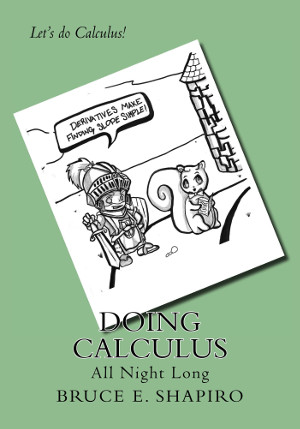

|
Fancy-pants calculus books are easy to find. There are so many it's a wonder that we aren't drowning under the crush. There are three times as many "math" listing on Amazon as there are "sex" listings. This may be because nearly a million American college students are expected to shell out some $200 annually to purchase these doorstops that they never even crack open. "Doing Calculus” is a giant step backwards in publishing. It doesn't have any bells and whistles. Unlike those those other calculus books, the ones with gee-whiz animations that rattle your teeth and on-line assessment tools that blink and flash and pop your cerebellar networks into a seemingly catatonic overload, it's just ink on paper. Or you can go for the DRM-free PDF file. With lots of snarky comments hidden between the lines. And cool pictures. |
 | Sure, it comes with a web page (in fact you're looking at it right now), but there's virtually nothing useful on the web page, so it is unlikely to drive you nuts. And equally unlikely to crash your computer. Calculus might drive you bonkers, but the web page is unlikely to do more than mildly amuse you. "Doing Calculus" is not just another doorstop. It's a cheaper doorstop. It's a better looking doorstop. Though the paperback is thin enough that you might actually be able to cram it under some doors. Depends on the door. If you go for the PDF, you'll have to print out a lot of pages and use really big staples to turn it into a door stop. |
|
Quantifying Change
1 Slope and Rate of Change 2 Limits 3 Limit Laws 4 Trigonometric Limits 5 Asymptotes 6 Formal Theory of Limits 7 Continuity 8 Calculus Without Limits Differential Calculus 9 Basic Formulas for Derivatives 10 Product and Quotient Rules 11 The Chain Rule 12 Implicit Differentiation 13 Related Rates 14 Inverse Functions 15 Exponentials and Logarithms 16 Indeterminate Limits 17 Extreme Values 18 Mean Value Theorem 19 Curve Shape 20 Optimization 21 Newton’s Method |
Integral Calculus 22 Antiderivatives 23 Area Under a Curve 24 The Definite Integral 25 Substitution Methods 26 Area Between Curves 27 Volumes of Rotation 28 Average Values 29 Integration by Parts 30 Improper Integrals 31 Trigonometric Integrals 32 Trigonometric Substitutions 33 Integrating Rational Functions 34 Numerical Integration 35 Arc Length Applications 36 Parametric Equations 37 Polar Coordinates 38 Sequences 39 Series 40 Power Series 41 Differential Equations |
Appendices Algebraic Formulas Table of Derivatives Table of Integrals Index |
download pdf of table of contents download pdf of chapter 1
PDF of appendices: algebra, derivative, integral
tables
Doing Calculus was written with partial support provided by the EText initiative at the California State University, Northridge. Currently enrolled students at CSUN may obtain PDF copies by clicking on the button below.
Sales already in the single digits.
Additional useless information may be posted here from time to time.
Don't waste your money
on expensive calculus books.
If you feel a compulsive need to throw your money away, give it to me
instead.